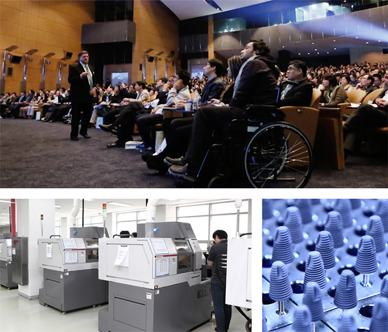
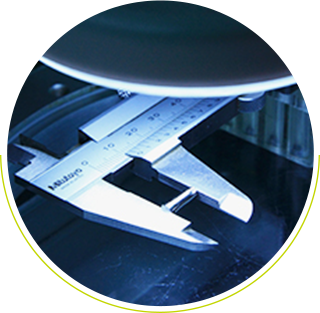
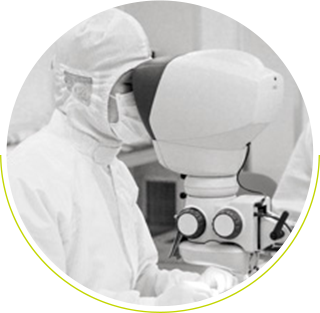
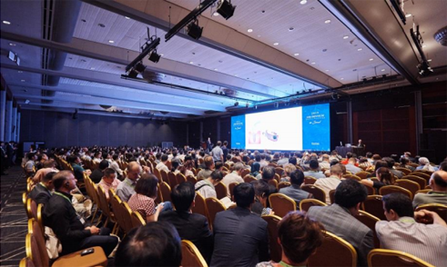

Dentium
For Dentists
By Dentists

인류를 위한 혁신, 품질 절대주의 덴티움의 신념이 세상을 바꾸어 갑니다.
‘Total Solution Provider & Self Development Manufacturer’을 모토로 2020년 글로벌 TOP 6 진입을 위해 자체 연구개발(R&D)을 통한 차별화된 기술력을 확보하여 최고 품질의 치과용 임플란트와 생체 재료, 치과용 디지털 의료기기까지 아우르는 통합적인 임플란트 시스템을 구축하고 있습니다.

치과용 의료기기 시장을 선도하는 덴티움 임플란트
덴티움이 쌓아 온 수년간의 임상 경험은 세계의 모든 고객들로부터 뛰어난 평가를 받고 있으며, 보다 안정적이고 골 손실을 최소화하는 탁월한 골 유착 반응은 이미 많은 임상 치료와 논문에서 훌륭한 성공 결과를 보여 주며 치과용 의료기기 분야의 세계적인 브랜드로 자리매김하고 있습니다.

시간이 지날수록 가치를 더하는 덴티움 임플란트
국내에서 유일하게 10년 이상의 장기 임상 데이터를 보유하고 있는 임플란트, 덴티움 임플란트입니다. 2002년 출시 이후 꾸준한 사랑을 받고 있는 ㈜덴티움 IMPLANTIUM의 10년 장기 생존율에 관한 논문이 SCI급 저널인 IJPRD에 출간되며 장수 브랜드로 인정받았습니다.
10번의 공정 10번의 전수검사 100% 자체 생산 품질 절대주의 실현
원자재 검사부터 멸균처리까지 매 공정 검수를 실시하여 최상의 품질을 유지합니다. 덴티움 임플란트 생산공정은 총 10단계로 이루어져 있으며, 매 공정을 완료할 때마다 전수 검사를 실시해 최상의 품질을 유지하고 있습니다.
임상케이스 : Bone Level
A 'bone level' dental implant is advantageous because it sits approximately 3-6 mm below the visible gum line which means that the connection between the implant screw and the restoration sits well below the visible gum margin.
- 10 , 3.70mm Deep Conncection
- 접촉면의 증가로 Non-hex 사용 시에도 rotation 방지와 Sink-down을 최소화할 수 있습니다.
임상케이스 : Tissue Level
Tissue-level implants have the abutment on top of the implant in one component and follow non-submerged healing. This treatment protocol enables osseointegration of the rough surface of the implant body and soft tissue attachment to the polished implant abutment during the same healing period after implant placement.
- Slim but Strong
2.5mm 전치부 2Piece 임플란트 보철 가능
3.5mm 구치부 적용 가능 강도 - ONE-Platform
모든 적응증에 적용 가능한 ø 3.8 단일 플랫폼 - Thread
가늘고 날카로운 나사선으로 식립 시 토크의 부담감 Down 초기고정력 Up
넓은 치조골과 접촉면으로 Immediate Loading, Early Loading 최적화
Dentium Academy
Dentium Academy는 덴티움만의 체계적인 교육과 임상 데이터를 통해 다양한 교육 콘텐츠를 제공하고자 합니다.
온라인/오프라인을 통해 변화의 흐름에 발맞춰 창의적이고, 유익한 콘텐츠를 만들어 나가겠습니다.

Lectures
세계 많은 곳에서 덴티움과 함께 합니다.
글로벌 임상 네트워크 구축 Dentium Clinical Research Center
사람을 위한 의료제품이기에 잘 만드는 것은 기본입니다. 덴티움은 기본에 충실하며, 더 나아가 어떻게 잘 사용할 수 있는지 고민합니다.
설립 후 16년 동안 임플란트만을 연구해 온 덴티움은 미국 하버드 대학을 비롯하여 국내외 유수의 치과 대학과 활발한 임상 연구를 수행하고 있으며, 오랜 노하우로 임플란트 관련 세미나 개최 및 교육 프로모션을 진행하고 있습니다.
이를 통해 각국의 치과 의학의 석학들과 전문의 간 임플란트 정보를 교류하고 첨단 기술의 발굴에 앞장서며 의료산업 발전에 기여하고 있습니다.
글로벌 사업장 알아보기
R&D
시장을 선도하는
시장을 선도하는
창조 혁신 DentiumR&D center
진정한 가치를 만들기 위한 덴티움의 혁신은 계속됩니다.
덴티움 R&D center는 안정성과 유효성 검증 및 창조 혁신을 가능케 하는 첨단 설비 시스템을 갖추고 있으며,
전문 연구원들로 구성되어 있습니다. 세계 유수의 대학과 전문 연구기관의 협력으로 심플한 디자인과 간편하면서도
정확한 시술이 가능한 인공치근과 시술용 키트 및 골 이식재, 멤브래인을 포함한 임플란트 시스템을 개발해 보다
빠르고 심미적인 임플란트 시술 환경과 재료를 제공하고 있습니다.
Dentium R&D Process
Market Survey Identification of customer’s needs and demands
Design & Development of Advanced Materials Determination and production of design concept and goal
Evaluation & Verification Validation through collaboration with governments,universities, and hospitals
Certification & Authorization Recognition from govern mental regulatory affairs
Product Evaluation in the Market Reflection of customer’s complaints and suggestions
문의
Our Office
- 법인명 : (주)덴티움
- 대표자 : 류기홍, 서승우
- 주소 : 서울특별시 강남구 테헤란로87길 21, 10층 1001호 (삼성동, 동성빌딩)
고객센터
- 텐티움 080-050-2875
- 덴티움몰 080-050-2875
- 덴티움 아카데미 070-7098-9189
- 디지털센터 070-7098-9081
덴티움, 새로운 길을 연다
Dentium, Opening a new Generation.
2020년 글로벌 TOP 6 진입을 위하여
2020년 글로벌 TOP 6 진입을 위해 자체 연구개발(R&D)을 통한 차별화된 기술력을 확보하여
최고 품질의 임플란트 시스템을 제공하기 위해 매진하고 있습니다.
덴티움은 널리 인정받고 있는 치과용 임플란트 제품 이외에도 생체 재료 분야에서도 폭넓은 연구를 통해 골이식제,
차폐막 등 다양한 골재생과 치주조직 재생 관련 제품들을 개발하고 있습니다.
또한, 2010년 ICT(Institute of Convergence Technology) 사업 본부를 설립하여 3차원 방사선 기계인 CBCT,
캐드캠(CAD/CAM)시스템을 자체 개발해 임플란트 시스템과 연계하여 통합 임플란트 시스템을 구축
‘Total Solution Provider & Self Development Manufacturer’ 을 실현하고 있습니다.